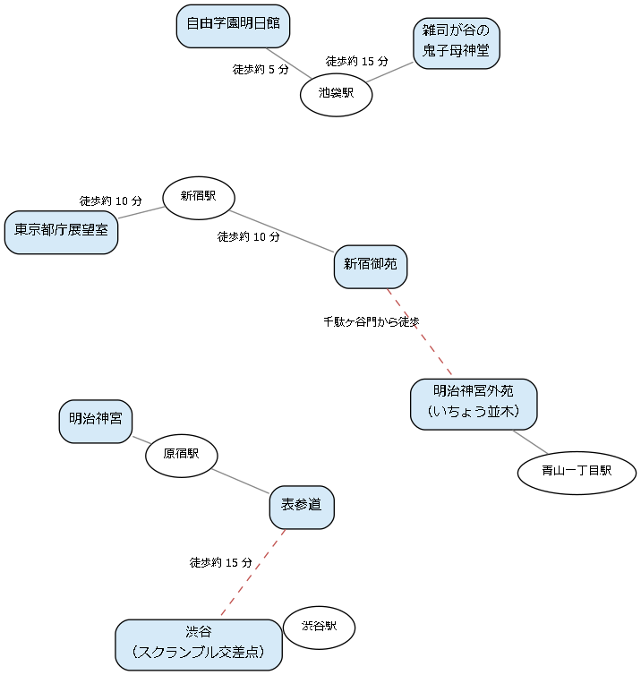

7. 新宿・渋谷・原宿・池袋
このエリアは、JR 山手線の西側に連なる副都心とその周辺である。江戸時代には郊外の宿場や大名の下屋敷が置かれた土地で、明治以降に鉄道の発達とともに大きな繁華街に成長した。高層ビルやにぎやかな街のすぐ隣に、明治神宮の森や新宿御苑などの広大な緑地が広がっているのがこのエリアの特徴である。

図: 新宿・渋谷・原宿・池袋の名所の位置関係（模式図）
7.1. 新宿御苑
日本庭園、イギリス風景式庭園、フランス式整形庭園の 3 つの様式を組み合わせた、広さ約 58 ha の庭園である。かつての皇室の庭園で、現在は環境省が国民公園として管理している。
見どころ
桜：約 65 品種の桜が植えられており、早咲きの品種から遅咲きの八重桜まで、2 月下旬から 4 月下旬ごろまで長い期間にわたって花見を楽しめる。
3 つの様式の庭園：広い芝生と大きな木々が並ぶイギリス風景式庭園、プラタナスの並木とばらの花壇が左右対称に並ぶフランス式整形庭園、池を中心とした日本庭園を歩き比べられる。
大温室：熱帯や亜熱帯の植物、絶滅のおそれのある植物などを展示している。
旧洋館御休所：明治時代に建てられた皇室の休憩所で、重要文化財である。公開日が限られている。
菊花壇展：毎年 11 月の前半に、皇室ゆかりの伝統的な様式で菊を展示する催しが開かれる。
歴史・由来
江戸時代には信濃国高遠藩主の内藤家の下屋敷であった。明治時代に政府の農業試験場となり、1906 年に皇室の庭園「新宿御苑」として完成した。戦後の 1949 年に国民公園として一般に公開された。
楽しみ方のこつ
園内への酒類の持ち込みは禁止されており、遊具を使った遊びもできない。このため、桜の時期でも比較的落ち着いて花見ができる。月曜日は原則として休園である（桜の時期などは開園）。新宿門、大木戸門、千駄ヶ谷門の 3 つの門があるため、帰りの駅に合わせて出口を選ぶとよい。
最寄り駅 |
東京メトロ丸ノ内線の新宿御苑前駅から新宿門まで徒歩約 5 分、JR 千駄ケ谷駅から千駄ヶ谷門まで徒歩約 5 分、JR 新宿駅から新宿門まで徒歩約 10 分 |
|---|---|
料金 |
有料 |
予約 |
不要 |
所要時間の目安 |
1.5〜2 時間 |
公式サイト |
併せて訪れたい名所
千駄ヶ谷門から南東に歩くと明治神宮外苑に至る。
7.2. 東京都庁展望室
東京都庁の第一本庁舎の 45 階、地上 202 m にある展望室で、無料で入室できる。新宿の高層ビル群を間近に見下ろし、天気の良い日には富士山も見える。
見どころ
南展望室と北展望室：第一本庁舎の上部の 2 つの塔に、それぞれ展望室がある。営業時間と休室日は 2 つの展望室で異なる。
都庁舎の建築：第一本庁舎は丹下健三の設計で、2 つに分かれた上部の塔がゴシック様式の大聖堂を思わせる。
プロジェクションマッピング：夜には第一本庁舎の東側の壁面に映像を映し出すプロジェクションマッピングが上映されている。
歴史・由来
都庁は長く丸の内（現在の東京国際フォーラムの場所）にあったが、新宿副都心の開発に合わせて 1991 年に現在の地に移転した。
楽しみ方のこつ
無料で入れる展望室としては都内で最も高い場所の一つである。入室の際には手荷物の検査がある。夕暮れから夜にかけての夜景もよい。
最寄り駅 |
都営大江戸線の都庁前駅からすぐ、JR 新宿駅（西口）から徒歩約 10 分 |
|---|---|
料金 |
無料 |
予約 |
不要 |
所要時間の目安 |
30 分〜1 時間 |
公式サイト |
併せて訪れたい名所
新宿駅の東側に出れば新宿御苑がある。
7.3. 明治神宮
明治天皇と昭憲皇太后を祀る神社で、約 70 ha の広大な森に囲まれている。毎年の初詣の参拝者の数は全国有数である。
見どころ
鎮守の杜：神社の森は、創建の際に全国から献木された約 10 万本の木を植えて造られた人工の森である。100 年以上をかけて、人の手をほとんど加えずに自然の森に近い姿に育つよう計画された。
大鳥居：参道の途中にある木造の明神鳥居としては日本最大級の鳥居で、樹齢 1,500 年を超える台湾の檜で造られている。
御苑：境内にある庭園で、6 月の花菖蒲と、加藤清正が掘ったと伝えられる井戸「清正井（きよまさのいど）」が知られる。
酒樽とワイン樽：参道には全国の酒造会社から奉献された日本酒の樽と、フランスのワインの樽が並んで奉納されている。
歴史・由来
明治天皇が亡くなったあと、天皇をしのぶ人々の願いによって 1920 年に創建された。境内の森の計画には、当時の林学者たちが関わり、常緑の広葉樹を中心とした「永遠の杜」を目指した。2020 年に鎮座 100 年を迎え、境内には明治神宮ミュージアムが開館した。
楽しみ方のこつ
原宿駅側の南参道と、代々木駅・参宮橋駅側の北参道がある。玉砂利の参道は意外に長く、原宿駅から本殿まで 10 分以上歩く。早朝の参拝は森が静かで清々しい。正月の三が日は大変に混雑する。
最寄り駅 |
JR 原宿駅、東京メトロ千代田線・副都心線の明治神宮前〈原宿〉駅から南参道の入口まで徒歩約 1〜3 分 |
|---|---|
料金 |
無料（御苑とミュージアムは有料） |
予約 |
不要 |
所要時間の目安 |
1〜1.5 時間 |
公式サイト |
併せて訪れたい名所
南参道の入口から表参道が延びている。南参道の南には、1964 年の東京オリンピックのために丹下健三が設計した国立代々木競技場がある。
7.4. 明治神宮外苑
明治神宮の外苑として整備された地区で、聖徳記念絵画館と、その正面に向かって延びるいちょう並木が知られる。秋の黄葉の時期には並木道が黄金色に染まる。
見どころ
いちょう並木：青山通りから絵画館に向かって約 300 m にわたり、146 本のいちょうが 4 列に並ぶ。いちょうは青山通り側から絵画館に向かって次第に背が低くなるように植えられており、遠近法の効果で絵画館が奥に遠く見えるよう工夫されている。
聖徳記念絵画館：明治天皇と昭憲皇太后の生涯を描いた 80 点の壁画を展示する美術館である。1926 年に完成した建物は重要文化財に指定されている。
歴史・由来
外苑は、明治神宮の創建に合わせて国民の献金と献木によって整備され、1926 年に完成した。いちょう並木は 1923 年に植えられた。現在、外苑では野球場やラグビー場の建て替えを含む再開発の工事が進められており、いちょう並木の保全が課題となっている。
楽しみ方のこつ
黄葉の見ごろは 11 月中旬から 12 月上旬ごろで、この時期には「神宮外苑いちょう祭り」が開かれる。見ごろの週末は大変に混雑するため、平日の朝に出かけるのがよい。再開発の工事の進み具合によって、通行できる範囲が変わることがある。
最寄り駅 |
東京メトロ銀座線・半蔵門線、都営大江戸線の青山一丁目駅から徒歩約 3 分、東京メトロ銀座線の外苑前駅から徒歩約 5 分 |
|---|---|
料金 |
無料（絵画館は有料） |
予約 |
不要 |
所要時間の目安 |
30 分〜1 時間 |
公式サイト |
併せて訪れたい名所
北西に歩くと新宿御苑の千駄ヶ谷門に至る。
7.5. 表参道
明治神宮の参道として造られたけやき並木の大通りである。通りの両側には、国内外の著名な建築家が設計した商業ビルが並び、建築を見て歩くだけでも楽しい。
見どころ
けやき並木：原宿駅の近くの神宮橋から青山通りまでの約 1 km にわたって、けやきの並木が続く。冬には並木がイルミネーションで飾られることもある。
建築巡り：安藤忠雄が設計した表参道ヒルズをはじめ、通りの周辺には個性的な外観の店舗が多い。
根津美術館：表参道の南東の端から歩いて行ける美術館で、日本と東洋の古美術を収蔵する。広い日本庭園があり、尾形光琳の「燕子花図屏風」（国宝）は毎年春ごろに公開されることが多い。
太田記念美術館：原宿の裏通りにある浮世絵の専門の美術館である。
歴史・由来
表参道は、1920 年の明治神宮の創建に合わせて参道として整備された。表参道ヒルズの場所には、関東大震災のあとに建てられた鉄筋コンクリート造りの集合住宅の同潤会青山アパートがあった。表参道ヒルズの東の端には、アパートの一部が再現されている。
楽しみ方のこつ
原宿駅から表参道を歩き、青山通りに出たあと渋谷方面へ向かえば、原宿・表参道・渋谷を一続きに散歩できる。原宿駅の東側の竹下通りは、若者向けの店が集まる通りとして知られる。
最寄り駅 |
JR 原宿駅、東京メトロの明治神宮前〈原宿〉駅・表参道駅 |
|---|---|
料金 |
無料（美術館は有料） |
予約 |
不要（美術館は展覧会によって日時指定の予約制） |
所要時間の目安 |
1〜2 時間 |
公式サイト |
併せて訪れたい名所
7.6. 渋谷
若者の文化の発信地として知られる繁華街で、駅前のスクランブル交差点は世界的にも有名である。現在も駅の周辺で大規模な再開発が続き、街の姿が大きく変わりつつある。
見どころ
スクランブル交差点：歩行者用の信号が一斉に青になると、四方八方から大勢の人が交差点を渡る。この光景は東京を象徴する景色の一つとして、海外からも多くの人が見物に訪れる。
忠犬ハチ公像：亡くなった飼い主を駅で待ち続けた秋田犬のハチの銅像で、待ち合わせの場所として知られる。
SHIBUYA SKY：駅の真上の渋谷スクランブルスクエアの屋上にある展望施設で、地上約 230 m の屋外から 360 度の眺めを楽しめる。スクランブル交差点を真上から見下ろせる。
MIYASHITA PARK：屋上に公園を設けた商業施設で、渋谷の街並みを眺めながら休憩できる。
歴史・由来
渋谷は、鉄道の駅を中心に発展した街である。ハチの像は 1934 年に建てられたが、戦時中に金属として供出され、現在の像は 1948 年に再建された 2 代目である。2000 年代からは、駅とその周辺を一体として造り替える大規模な再開発が進められ、渋谷ヒカリエ、渋谷スクランブルスクエアなどの高層ビルが相次いで開業した。
楽しみ方のこつ
スクランブル交差点は、交差点に面した商業施設の上の階や、駅の連絡通路から見下ろすことができる。SHIBUYA SKY は日没の前後に人気が集中するため、日時指定券を早めに購入しておきたい。屋上は天候によって閉鎖されることがある。
最寄り駅 |
JR・東京メトロ・東急線・京王井の頭線の渋谷駅からすぐ |
|---|---|
料金 |
無料（SHIBUYA SKY は有料） |
予約 |
不要（SHIBUYA SKY は日時指定券の購入を推奨） |
所要時間の目安 |
1〜2 時間 |
公式サイト |
併せて訪れたい名所
北東に歩くと表参道に至る。
7.7. 雑司が谷の鬼子母神堂
池袋の南、雑司が谷にある子育ての神を祀るお堂で、江戸時代の建物が重要文化財に指定されている。けやき並木の参道や、江戸時代から続く駄菓子屋など、池袋の繁華街のすぐ近くとは思えない落ち着いた雰囲気がある。
見どころ
鬼子母神堂：1666 年に建てられた本殿に、のちに拝殿などを加えたお堂で、2016 年に重要文化財に指定された。
大いちょう：境内にある樹齢数百年のいちょうの大木で、東京都の天然記念物である。子授けのいちょうとして信仰されている。
駄菓子屋：境内には、江戸時代の 1781 年に創業したといわれる駄菓子屋がある。
けやき並木の参道：参道に並ぶけやきの古木は、東京都の天然記念物である。
歴史・由来
鬼子母神は、もとは人の子をさらう鬼神であったが、釈迦に諭されて改心し、子育てと安産の神となったとされる。この地の鬼子母神像は、室町時代に近くの土中から掘り出されたと伝えられる。お堂の扁額などに書かれる「鬼」の字は、改心して角がなくなったことを表すため、上の点（角）のない字が使われている。
楽しみ方のこつ
池袋駅から歩くこともできるが、東京さくらトラムの鬼子母神前停留場や、東京メトロ副都心線の雑司が谷駅が近い。10 月には、万灯を掲げた行列が練り歩く「御会式（おえしき）」が行われる。近くの雑司ケ谷霊園には、夏目漱石、永井荷風、小泉八雲などの墓がある。
最寄り駅 |
東京メトロ副都心線の雑司が谷駅から徒歩約 5 分、東京さくらトラムの鬼子母神前停留場から徒歩約 3 分、JR 池袋駅から徒歩約 15 分 |
|---|---|
料金 |
無料 |
予約 |
不要 |
所要時間の目安 |
30 分〜1 時間 |
公式サイト |
併せて訪れたい名所
北西に歩くと自由学園明日館がある。
7.8. 自由学園明日館
アメリカの建築家フランク・ロイド・ライトが設計した学校の校舎で、重要文化財に指定されている。現在も結婚式や講演会などに使われながら、見学者を受け入れている。
見どころ
中央棟のホール：幾何学的な模様の大きな窓から光が差し込むホールで、ライトの設計の特徴がよく表れている。
食堂：ホールの上にある、天井の高い食堂である。椅子などの家具もライトの設計による。
講堂：道路を挟んだ向かい側にある講堂で、ライトの弟子の遠藤新が設計した。
歴史・由来
明日館は、羽仁もと子・吉一夫妻が創立した自由学園の校舎として、1921 年に建てられた。設計はライトと遠藤新による。学園が東久留米市に移転したあとも卒業生が中心となって校舎を守り、1997 年に重要文化財に指定された。その後の保存修理を経て、建物を使いながら保存する「動態保存」の例として知られている。
楽しみ方のこつ
結婚式などの行事があるときは、見学が休止されたり制限されたりすることがある。喫茶付きの見学では、ホールで飲み物と菓子をいただきながら建物を味わえる。
最寄り駅 |
JR 池袋駅（メトロポリタン口）から徒歩約 5 分、JR 目白駅から徒歩約 7 分 |
|---|---|
料金 |
有料 |
予約 |
不要（行事のため見学できない日がある） |
所要時間の目安 |
30 分〜1 時間 |
公式サイト |
併せて訪れたい名所
南東に歩くと雑司が谷の鬼子母神堂がある。